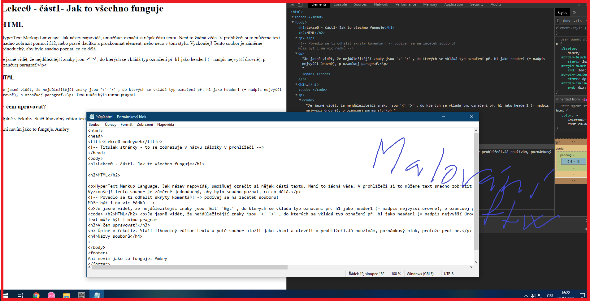

HyperText Markup Language. Jak název napovídá, umožňuej označit si nějak části textu. Není to žádná věda. V prohlížeči si to můžeme text snadno zobrazit pomocí f12, nebo pravé tlačítko a prozkoumat element, nebo něco v tom stylu. Vyzkoušej! Tento soubor je záměrně jednoduchý, aby bylo snadno poznat, co co dělá. Je to vlastně podobný princip jako LaTeX, akorát je výsledná stránka více připůsobivá různým zařízením, narozdíl od pdf totiž může přizpůsobovat text šířce obrazovky.
Je jasně vidět, že nejdůležitější znaky jsou '<' '>' , do kterých se vkládá typ označení př. h1 jako header1 (= nadpis nejvyšší úrovně), p ozančuje paragraf. Příkad tohoto odstavce a nadpisu 'HTML'. (tomu code pořád nerozumím) :
Těmto věcem v ostrých závorkách se říká tagy, asi. Bývají často párové - jeden začíná a druhý končí část označenou tímto tagem.
<h2>HTML</h2>
<p> Je jasně vidět, že nejdůležitější znaky jsou '<' '>' , do kterých se vkládá typ označení př. h1 jako header1 (= nadpis nejvyšší úrovně), p ozančuje paragraf. <\p>
Text může být i mimo paragraf
Úplně v čekoliv. Stačí libovolný editor textu a poté soubor uložit jako .html a otevřít v prohlížeči.Já používám, poznámkový blok, protože proč ne.
Zásadně nepoužívat mezery, háčky čárky, nebo jiný divný znaky. Jen ASCII(tj. písmena anlgické abecedy a čísla) přičemž url adresa nerozeznává velká malá písmena, tak pouívat radši jen malá.
Cascading Style Sheets. Jak je vidět, tahle stránka nevypadá moc záživně. Žádné bravičky nic. K přidání barev se dá (asi?) použít i HTML, ale v podstatě vždy je lepší použí CSS, které bylo vytvořeno právě za tímto účelem. V html si označíme nějak věci, v CSS jim potom nastvíme vlastnosti jako je barva, font, velikost, nebo třeba odřádkování. Více o něm v následující části (snad!).
Ve skutečnosti nemá nic společného s Javou, to jméno dali jen kvůli marketingu. Má na starosti dynamiku webové stránky. Takže klikání na věci, změna toho, co se zobrazuje atd. To je zatím vzdálená budoucnost, protože tomu sám nerozumím :D. Upravuje dynamicky html/css, nebo dále komunikuje se serverem. Server běží na například na PHP, ale to už vůbec netuším. Jen také řadí ke gigantům pozadí na kterém běží interent: HTML, CSS, JS, PHP.